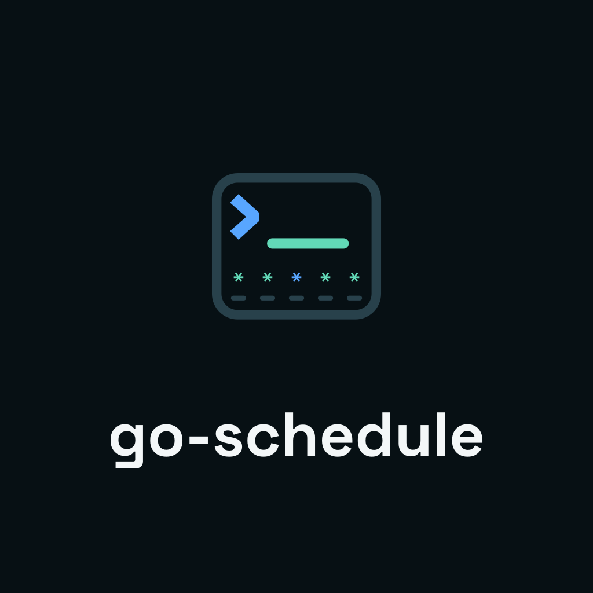
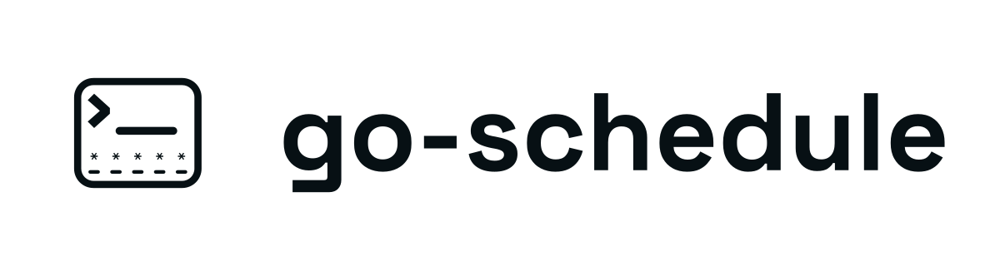

Brand and design system
go-schedule
Familiar scheduling, explicit behavior.
Cross-platform task scheduling with a CLI, desktop application, and background daemon.
A ShruggieTech project · Version 1.0.0
Familiar scheduling, explicit behavior.
Cross-platform task scheduling with a CLI, desktop application, and background daemon.
People should recognize a scheduler immediately and understand what it will do. go-schedule keeps authored expressions visible, translates them into plain language, and surfaces the policies that change execution.
| Category | Cross-platform task scheduling |
|---|---|
| Role | A readable scheduler for service-managed automation |
| Audience | Developers, operators, maintainers, and technical users who need exact behavior across operating systems |
| Descriptor | Cross-platform task scheduling with a CLI, desktop application, and background daemon |
| Parent | ShruggieTech, with shared typography and an independent product identity |
A task has an authored expression, a plain-language explanation, a next run when one exists, and an execution history. Event schedules state their lifecycle boundary without inventing a clock time.
The mark combines a terminal prompt, a command line, and five schedule cells. The center Anchor Blue cell identifies an exact run point. Interval Mint cells represent recurrence.




Keep text, borders, icons, and crops outside the boundary.

The wordmark and schedule-cell asterisks are outlined paths. No distributable logo depends on an installed font.
| Asset | Minimum |
|---|---|
| Reduced mark | 16 px |
| Full mark | 36 px |
| Horizontal | 180 px |
| Stacked | 104 px |
| Wordmark | 120 px |
Primary artwork uses Interval Mint and Anchor Blue on Night. Light surfaces use the deeper accessible accents. White and black variants support single-ink reproduction.


The guide cover uses the transparent mark directly on Night. The page title carries the product name and the supporting copy carries the descriptor. This removes the mismatched square and avoids repeating the same information inside a hero image.
Neutral surfaces carry most of the interface. Mint describes recurrence and ready state. Blue marks exact points, links, and focus. Amber requests attention. Red marks failure or destructive action.
| Token | Hex | Contrast |
|---|---|---|
| Ink | #132027 | 15.58:1 |
| Light Muted | #4A616B | 6.13:1 |
| Light Interval | #087A62 | 4.96:1 |
| Light Anchor | #0067C5 | 5.26:1 |
| Light Hold | #805500 | 6.12:1 |
| Light Stop | #B4232A | 6.12:1 |
Interval Mint measures 1.62:1 on Paper. It cannot carry text there. Use Light Interval and the corresponding light variants for essential text.
Every contrast number is recalculated from the token file during verification.
Headings and short display statements.
Readable schedules are useful when their execution policy is equally visible. Body and interface text should remain direct and calm.
Body copy, controls, descriptions, and documentation.
Schedule expressions, commands, paths, timestamps, logs, and metadata. Ligatures remain disabled.
| Function | Family | Available weight |
|---|---|---|
| Display | Space Grotesk | 500, 700 |
| Body | Geist | 400, 500 |
| Technical | Geist Mono | 400 |
| Wordmark | Outlined artwork | Fixed vector |
Use color, spacing, or a label for emphasis in technical text. Geist Mono has no bold face in this kit.
Visual references come from cron fields, terminal prompts, timelines, task queues, service status, and run history. Every line or point should explain a relationship or a state.
Use aligned rails for recurring fields, history, and execution flow.
Blue points identify a selected or exact run boundary.
Amber calls out catch-up, overlap, pause, or pending behavior.
Icons use a 24-unit grid and a 1.5-unit stroke. Extend the set with direct scheduling, task, service, and history symbols.
Use active voice, exact nouns, and observable outcomes. State prerequisites before commands. Name timezone, catch-up, overlap, and lifecycle boundaries whenever they change the result.
| Prefer | Avoid |
|---|---|
| task, schedule, expression, run | automation magic, workflow wizard |
| daemon, service, startup, reload | always-on intelligence |
| timezone, catch-up, overlap, policy | set it and forget it |
| next run unavailable | never miss a beat |
| supported, experimental, deferred | flawless, effortless, revolutionary |
At 09:30 every weekday in America/New_York.
Runs once when the scheduler daemon starts. Reloading the task list does not run it again.
No tasks match the current filters.
The task could not start because its working directory is unavailable.
The product name is always lowercase: go-schedule. Use daemon start for the process lifecycle boundary. Use host boot only for operating-system startup behavior.
The kit includes a small implementation layer so the written rules can be tested in a real interface.
Next run: 2026-08-31 09:00 America/New_York
Runnable and scheduled.
Waiting for a lifecycle boundary.
Execution ended in failure.
| File | Purpose |
|---|---|
| tokens/colors.css | Raw and semantic colors, plus light-surface mapping |
| tokens/typography.css | Families, available weights, tracking, leading, and scale |
| tokens/spacing.css | Spacing, radii, strokes, and motion |
| tokens/base.css | Focus, technical text, and reduced motion |
| components/components.css | Cards, buttons, fields, badges, and schedule rows |
go-schedule shares the parent brand's typography, dark-first discipline, and direct technical writing. Its mint-and-blue scheduling palette and terminal-field mark remain product-specific.
Use the endorsement in footers, About views, title-page colophons, repository metadata, and social previews. Keep it visually subordinate and outside the logo clear space.
The default surface is dark. Add class="gs-light" to a container for the accessible light token mapping.
The generation scripts, bundled fonts, and `build/geometry.py` recreate every logo and platform asset. `build/verify.py` checks portability, dimensions, contrast, PDF structure, encoding, and checksums.
The kit contains editable source, portable masters, platform derivatives, implementation tokens, examples, and measured verification.
| Directory or file | Contents |
|---|---|
| logos/svg/ | Vector masters, lockups, marks, wordmarks, repository header, social preview |
| logos/png/ | High-resolution raster exports |
| favicons/ | Browser, Apple, Android, SVG, ICO, and manifest assets |
| platform/ | Windows, macOS, and Linux deliverables |
| fonts/ | WOFF2, TTF, CSS, and OFL licenses |
| tokens/ | JSON source and CSS implementation tokens |
| icons/ | Six scheduling icons |
| components/ | Framework-neutral CSS and React wrappers |
| guidelines/ | Live visual reference |
| ui_kits/ | Demonstration task dashboard |
| specimens/ | Outlined schedule-readability specimen |
| build/ | Reproducible generators and verification |
| SKILL.md | Compact agent and contributor instructions |
| brand-guide.pdf | Printable reference manual |
| VERIFY.md | Measured checks and SHA-256 inventory |
Use SVG in interfaces and documentation. Use PNG for social platforms, raster-only systems, and external listings.
Run the commands in `build/README.md`. A nonzero verification result means the kit has drifted from one of its own claims.